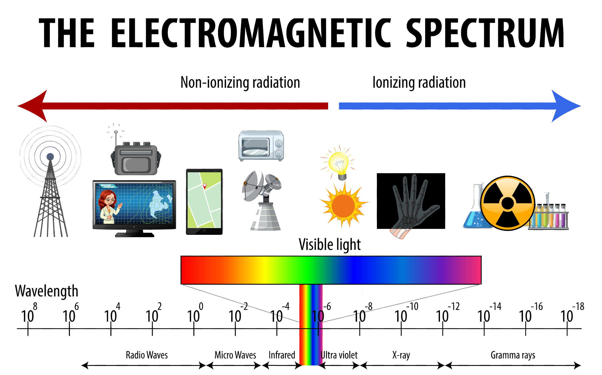
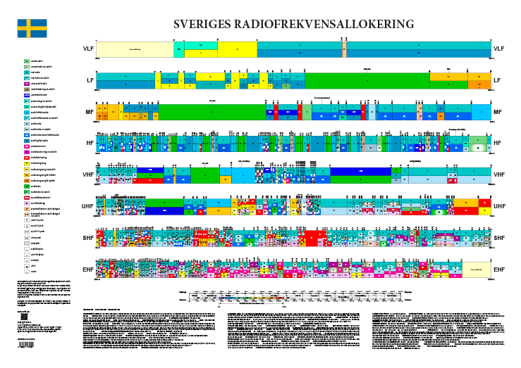

Why Meshtastic Uses 868 MHz
A friendly dive into the radio spectrum and why it matters for our networks
In previous blog posts, we’ve talked about how Meshtastic operates in the ISM band, about duty cycles, and the specific frequencies in use. This time, I want to zoom out and give a broader view — not just of Meshtastic, but of the radio spectrum itself.
Even though this topic isn’t directly about Meshtastic, I believe it can help us understand why we use certain frequencies — like 868 MHz — and why, for example, sending audio over Meshtastic isn’t really practical.
As with all my posts, this isn’t meant to be a complete guide or a technical manual. Think of it as a spark — something to make you curious, encourage you to explore, and inspire new ideas for what we can do with Meshtastic.
What Is the Electromagnetic Spectrum?
Let’s start by clearing up two terms that are often used interchangeably but mean slightly different things: electromagnetic spectrum and radio spectrum.
Electromagnetic Spectrum
This refers to all types of electromagnetic radiation — everything from extremely low-frequency radio waves to extremely high-frequency gamma rays. That includes microwaves, infrared, visible light, ultraviolet, X-rays — all of it. These waves all travel at the speed of light and differ only in their frequency and wavelength.
(And no — not all radiation is dangerous, and none of this has anything to do with nuclear bombs!)
Radio Spectrum
This is just a small slice of the electromagnetic spectrum — the portion that includes radio waves. These waves typically have frequencies below 300 GHz and wavelengths longer than 1 millimeter. They're especially useful for communication because they can travel long distances, go through walls, and aren't easily blocked by weather or terrain.
Why Is the Radio Spectrum Regulated?
The radio spectrum is a limited and valuable resource. If anyone could transmit anything, anywhere, at any time, radio communication would quickly become chaos — full of interference, noise, and conflict.
To prevent that, international and national regulatory bodies (like the ITU and local telecom agencies) assign specific frequency bands to specific uses. Examples include:
- FM radio
- TV broadcasting
- Mobile phones
- Wi-Fi
- Air traffic control
- Satellite communication
And these bands don’t all come with the same rules. Some require licenses and call signs. Others are reserved for government or emergency use. A few are open to public use — as long as you follow the rules.
Different Types of Radio Bands
Let’s briefly look at some of the common categories you’ll hear about:
- ISM (Industrial, Scientific, Medical): License-free, low-power use. This is where Meshtastic operates.
- Amateur Radio (Ham Radio): Requires a license and call sign. Great for hobbyists, but with strict rules: no encryption, limited commercial use, etc.
- Commercial Bands: Used by telecom providers. Heavily regulated and often auctioned for billions.
- Air/Military/Marine: Reserved for professional and mission-critical use — not something you experiment with!
Each of these bands has its own rules and limitations — including power limits, allowed devices, and types of messages.
Why Meshtastic Uses 868 MHz (and Sometimes 433 MHz)
Now we’re getting closer to our main question. Why does Meshtastic use the 868 MHz band (or 915 MHz in North America, and 433 MHz in some hardware)?
Because these fall into the ISM bands, which are:
- License-free
- Designed for low-power devices
- Widely supported by affordable hardware like LoRa modules
Originally, ISM bands were meant for machines that unintentionally generate electromagnetic noise — things like microwave ovens, arc welders, and medical equipment. But over time, engineers realized these bands could also be used for short-range, low-power communication.
If you’ve used Wi-Fi, Bluetooth, baby monitors, or RFID tags — congratulations, you’ve already used ISM bands.
That makes ISM a perfect fit for projects like Meshtastic, which rely on:
- Small data packets
- Long range (but low bandwidth)
- Low power consumption
- Community-friendly, license-free deployment
Why Not Use Other Frequencies?
You might ask: why not use amateur radio bands or even commercial ones?
Well, we could — but there are trade-offs:
- Amateur radio requires a license and doesn't allow encryption — which would limit private messages on a Meshtastic network.
- Commercial bands are off-limits unless you pay serious money and comply with strict regulations.
- Air or marine bands are strictly regulated and illegal for public use.
So ISM gives us the best mix of freedom, range, and hardware support — with the important caveat that we must respect duty cycle and power limits.
The Takeaway
So, why does Meshtastic use 868 MHz? Because it’s part of a license-free ISM band that’s ideal for the kind of low-power, low-data communication that LoRa and Meshtastic were designed for.
Of course, there are many other ISM frequencies — and that’s a topic I might explore in a future blog.
I’ll admit: even this “friendly” overview of the radio spectrum can get technical pretty quickly. But I hope I’ve sparked your curiosity and helped you understand just a bit more about the f ascinating world of wireless communication.
Keep experimenting. Keep learning. And let’s keep building cool things together.
Written by JohanV
2025-07-20